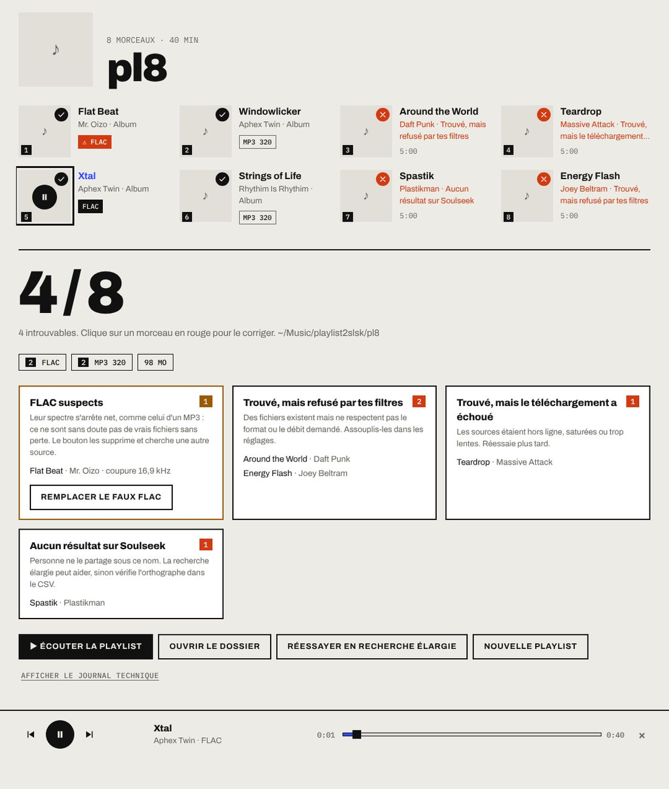
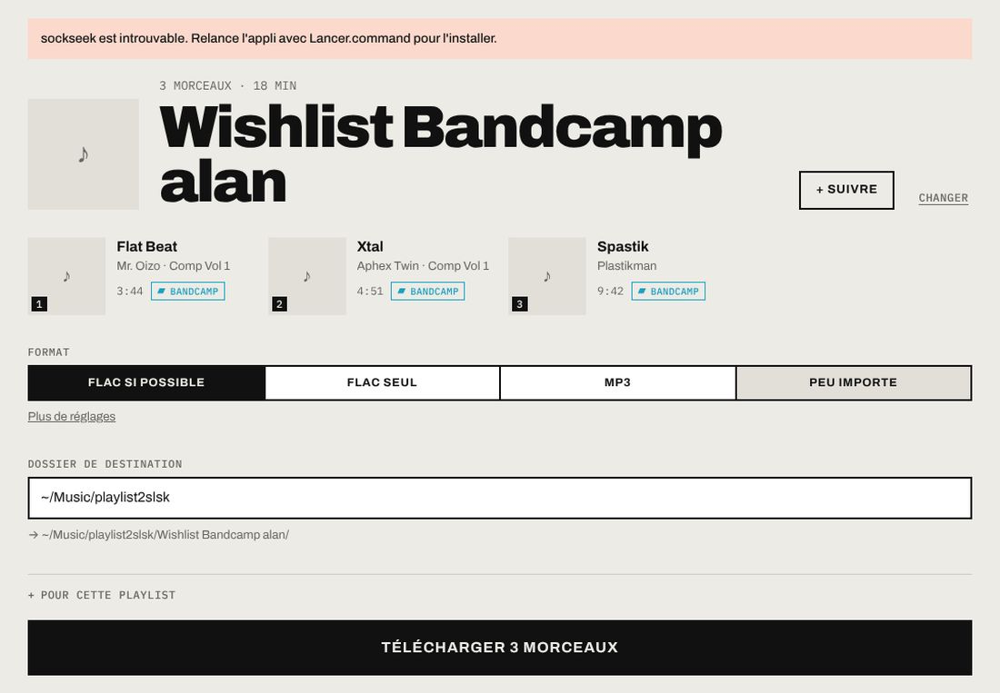
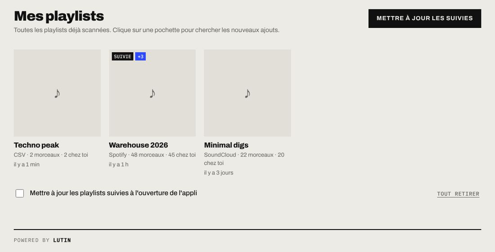

Ta playlist,
en vrais fichiers.
Colle le lien d'une playlist. Playlist2Slsk cherche chaque morceau sur Soulseek, le télécharge en FLAC ou en MP3, le renomme, le tague, ajoute la pochette et range le tout, prêt à mixer.
Spotify · Deezer · YouTube · SoundCloud · Bandcamp · CSV
Gratuit. Tout tourne sur ton ordinateur, rien n'est envoyé ailleurs.
D'où vient ta playlist ?
Six portes d'entrée. Pas besoin de compte Spotify ou Deezer : un lien public suffit.
Quatre gestes.
Du lien collé au dossier rangé, sans ligne de commande.
Colle le lien
Ou dépose un CSV. La liste des morceaux s'affiche avec pochettes et durées.
Choisis la qualité
FLAC si possible, FLAC seul, MP3, ou peu importe. Et le dossier de destination.
Télécharge
Chaque morceau passe au vert ou au rouge en direct. Un clic relance les manquants en recherche élargie.
Mixe
Fichiers nommés « Artiste - Titre », tagués, avec pochette, plus une playlist .m3u8 dans l'ordre.
Dans le bac.
Pensé par un DJ pour préparer ses sets : ce qui sort de l'appli va directement dans le logiciel de mix.
- TitreP2S-01
Noms propres
Fini les « track01_final_FINAL.mp3 ». Le nom vient de la playlist, pas du fichier partagé.
pochetteP2S-02
Métadonnées réécrites
Titre, artiste, album, année et pochette en 640 px intégrés au fichier, en MP3, FLAC, M4A, OGG ou AIFF.
kHzP2S-03
Faux FLAC repérés
Le spectre de chaque FLAC est analysé. Un MP3 déguisé est signalé et remplacé en un clic.
.xmlP2S-04
Traktor et Rekordbox
Une playlist Traktor par téléchargement, et un rekordbox.xml tenu à jour. Bouton « → Rekordbox » inclus.
Playlists suivies
Suis une playlist : à la mise à jour, seuls les nouveaux morceaux sont téléchargés.
Lecteur intégré
Écoute ce qui vient d'arriver sans quitter l'appli, avant de l'envoyer dans ta bibliothèque.
Introuvables corrigés
Clique sur un morceau en rouge, retouche l'artiste ou le titre, relance. La correction est retenue.
Pas de doublons
Indique tes dossiers de musique : ce que tu as déjà n'est pas retéléchargé.
En vrai.
Captures de l'appli. Le thème sombre suit celui de ton ordinateur.



Installer.
Tout est inclus : rien d'autre à installer. L'appli n'est pas signée par Apple ou Microsoft, d'où une étape de plus au premier lancement.
Mac
Apple Silicon (M1 et suivants) ou Intel
- Ouvre le .dmg et glisse Playlist2Slsk dans Applications.
- Lance-la une fois. macOS affiche « Apple ne peut pas vérifier… » : clique sur Terminé.
- Va dans Réglages Système › Confidentialité et sécurité, puis « Ouvrir quand même ».
- Si macOS demande l'accès à Musique ou Téléchargements, autorise : c'est là que l'appli range tes morceaux.
Windows
Windows 10 et 11
- Lance Playlist2Slsk-Windows-Setup.exe.
- À l'écran bleu « Windows a protégé votre ordinateur », clique sur « Informations complémentaires ».
- Puis « Exécuter quand même » et suis l'installation.
- L'appli est dans le menu Démarrer, avec son Lisez-moi.
Au premier lancement : ton compte Soulseek
Pas de compte ? Invente un identifiant et un mot de passe, Soulseek le crée tout seul. Note-les bien. Si tu utilises déjà Soulseek ailleurs (Nicotine+…), prends un compte à part.
Bon à savoir.
Soulseek, c'est quoi ?
Un réseau de partage de musique né en 2000, très riche en sons rares, pressages vinyle et FLAC. Les fichiers viennent des autres utilisateurs.
Joue le jeu du réseau
Playlist2Slsk télécharge mais ne partage pas. Pour rendre la pareille, partage ta collection avec un vrai client comme Nicotine+.
Et côté légal ?
Télécharger de la musique protégée que tu n'as pas achetée reste de la contrefaçon en France. Le bouton Bandcamp mène à la page de l'artiste pour l'acheter.
Soutiens les artistes
Playlist2Slsk est un outil pour organiser ta propre musique : des morceaux que tu possèdes ou que tu as le droit de télécharger. Si un titre tourne dans tes sets, achète-le, sur Bandcamp ou ailleurs. Playlist2Slsk est un projet indépendant, sans lien avec Spotify, Deezer, YouTube, SoundCloud, Bandcamp, Soulseek, Native Instruments (Traktor) ou AlphaTheta (Rekordbox) ; ces noms ne servent qu'à indiquer la compatibilité.
CréditsPowered
by Lutin.
- Idée, tests, setsLutin
- Moteur Soulseeksockseek par fiso64 (anciennement slsk-batchdl), inclus dans l'appli sous licence AGPL-3.0. Code source : github.com/fiso64/sockseek
- RéseauSoulseek et tous ceux qui partagent
- YouTube, SoundCloudyt-dlp
- Tags et pochettesmutagen, pochettes Spotify et iTunes
- Analyse des FLACNumPy, soundfile
- Appli de bureaupywebview, PyInstaller, Inno Setup
- Export SpotifyExportify
- TypographieArchivo, IBM Plex Mono